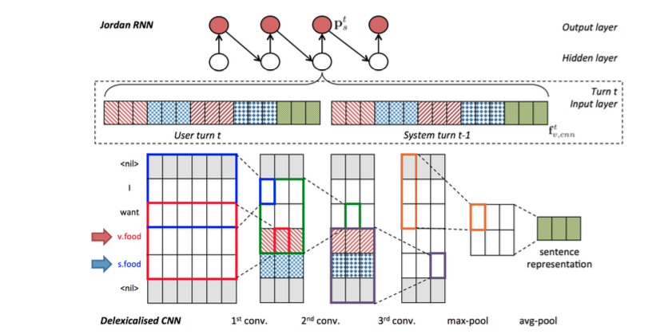
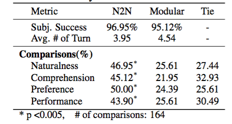
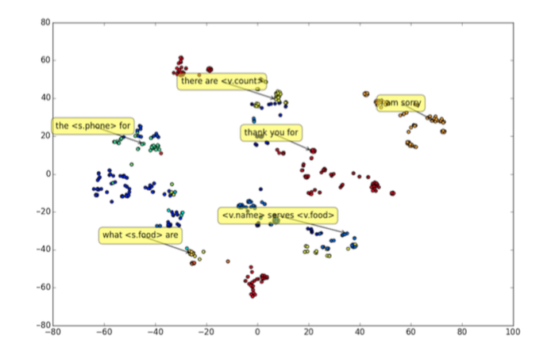

A Network-based End-to-End Trainable Task-oriented Dialogue System #PaperWeekly#
构建一个task-oriented的bot，比如订票，技术支持服务等等，是一件非常难的事情，因为对于特定任务，训练数据会非常非常有限。在学术界，bot领域现在最流行的解决方案之一是seq2seq，在一个非常庞大的open-domain数据集上进行训练，得到一些效果不错的模型，但难以应用到具体task中，因为这类模型无法做到与数据库交互以及整合其他有用的信息，从而生成实用的response。还有一种非常流行的方案是reinforcement learning，上一篇分享的paperDeep Reinforcement Learning for Dialogue Generation将两者有机地结合在了一起，增强学习可以使得response生成时考虑更长远的影响。
本文将分享的这篇paper，针对task-oriented的bot问题，平衡了两种流行方案的优缺点，提出了一套有参考价值的、具有实际意义的seq2seq解决方案。paper的题目是A Network-based End-to-End Trainable Task-oriented Dialogue System，本文于2016年5月20日发表于arxiv上，作者是来自剑桥大学Dialogue System Group的博士生Tsung-Hsien Wen，该组专门研究chatbot相关技术，发表过大量与之相关的paper，后续会更多地关注该组的工作。

上图是本文方案的架构示意图，分为五个部分。下面分别进行介绍：
1、Intent Network
这个部分可以理解为seq2seq的encoder部分，将用户的输入encode成一个vector z(t)。encoder部分分别用了lstm和cnn两种模型对该输入进行建模。这两种句子表示的方法在之前的文章中都有介绍。
2、Belief Trackers
这个部分又被称作是Dialogue State Tracking(DST)，是task-oriented bot的核心部件。本文的Belief Trackers具有以下的作用：
支持各种形式的自然语言被映射成一个有限slot-value对集合中的元素，用于在数据库中进行query。
追踪bot的state，避免去学习那些没有信息量的数据。
使用了一种weight tying strategy，可以极大地减少训练数据的需求。
易扩展新的组件。

这个组件的输入时用户的input，输出是一个informable slot和requestable slot的概率分布，这里的informable slot是指food，price range和area（以订餐为例），用来约束数据库中的查询，requestable slot是指address，phone，postcode等一些可以被询问的值。这里会定义一个针对具体task的知识图谱，来表示这些slot之间的关系，每个slot都会定义一个tracker，tracker的模型如上图所示，包括一个CNN特征提取模块和一个Jordan型的RNN模块，CNN不仅仅对当前的input进行处理，还对上一轮的user input进行处理，综合起来作为RNN的输入。
这个组件的意义在于获取到预先定好的知识图谱中每个slot的分布，就是说弄清楚用户在这轮对话中的需求是哪个词或者词组。
3、Database Operator
数据库查询的输入来自于Belief Trackers的输出，即各种slot的概率分布，取最大的那个作为DB的输入，进行查询，获取到相应的值。
4、Policy Network
这个组件是像一个胶水，起到粘合其他上面三个组件的作用。输入是上面三个组件的输出，输出是一个向量。
5、Generation Network
最后一个组件是生成模型，本质上是一个语言模型，输入是Policy Network的输出，输出是生成的response，再经过一些处理之后可以返回给用户了。这里的处理主要是将response中的slot，比如s.food还原成真实的值。生成部分用简单的LSTM-LM可以做，用Attention Model也可以做，效果会更好。
数据的准备这部分，利用了众包进行收集，一共采用了680轮对话作为训练数据，数据库中保存了99个饭馆，3个informable slots和7个requestable slots。
训练分为两个阶段，第一阶段是训练belief trackers，得到模型之后，更新参数，对生成网络中的语言模型进行训练，得到full model，batch size取1。
bot模型自动评价这块是一个非常难的事情，本文选择了BLEU score、entity matching rate和objective task success rate，本文模型均取得了不错的结果。另外，通过人工评价对本文模型和rule-based进行了对比，结果看下图：

最后paper给出了一种生成的句子向量的二维图，如下图：

几乎同一类话都被聚集到了相似的位置上，验证了模型的有效性。
开放域的bot只是根据query生成一句response，虽然质量可以做到很高，但实用价值不大。面向具体业务的闭域bot一直难以应用seq2seq的解决方案在于，无法将大量的专业信息建模到模型中来，包括：历史信息，用户身份信息，业务信息等等，本文打开了一扇窗，就是将具体的业务信息和历史信息加到了模型中，并且通过将对话中的slot词转换为一些slot表示，就好比构建了很多的模板，降低了对训练数据的需求，避免了seq2seq在应用时存在的问题。如果再考虑上Jiwei Li的那篇A Persona-Based Neural Conversation Model中对用户信息的建模，bot的实用价值就会更大，用data来解决真正的业务问题就会更进一步。
一点思考，欢迎交流。